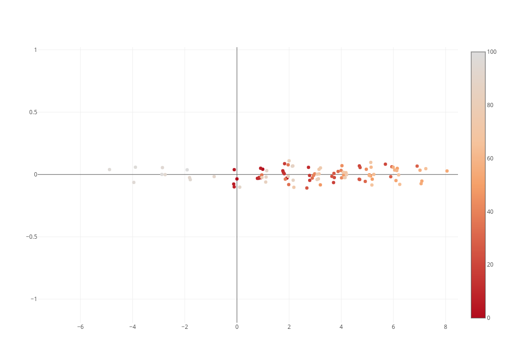
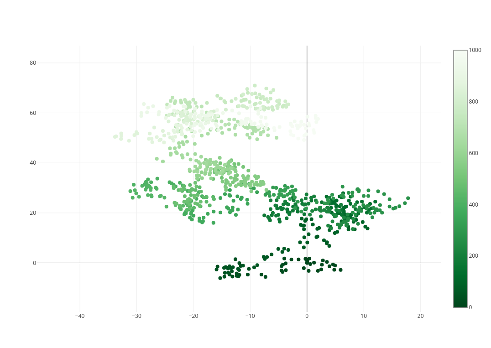

In the field of image processing, we always need to get the mean RGB color of batch pictures. In training field, this method can help get a better convergence.
The source code can be followed:
1 | import os |
In the field of image processing, we always need to get the mean RGB color of batch pictures. In training field, this method can help get a better convergence.
The source code can be followed:
1 | import os |
One of our paper, named as “Cognition-based Deep Learning: Progresses and Perspectives”, was submitted to AIAI18 (The 14th International Conference on Artificial Intelligence Applications and Innovations). It is the first time for me to write a survey paper.
For secrecy, I will rethink the process how my first paper come out instead of reviewing too much details of this paper.
For some reason, our group is going to submit a survey paper of cognition-based deep learning. I was honored to be the one who mainly review the progresses and draw my blueprint toward this field. After referring to many papers in cognition-based deep learning recent year, I gained a lot of intuitions of the current state in this field. Then, I spend three days to finished my first draft.
Then, prof. Zheng gave me some essential instructions about this paper macroscopically, my elder sister Chen helped me correct my spelling , and my elder brother offered me Chen offered me some tips of submitting papers. Thanks a lot for their help.
Finally, I will represent the abstract of the paper:
The human brain is composed of multiple modular subsystems, with a unique way interacting among. These subsystems have their own unique characteristics and interact to support cognitive functions such as memory, attention and cognitive control. Nowadays, deep learning methods based on the above-mentioned functions accompanied with knowledge are widely used to design more dynamic, robust and powerful systems. We first review and summarize the progresses of cognition-based deep neural networks, and how cognitive mechanisms can be applied to more brain-like neural networks. Then we propose a general framework for the design of cognition-based deep learning system. Although great efforts have been made in this field, cognition-based deep learning is still in its early age. We put forward the potential directions towards this field, such as associative memory in deep learning, interpretable network with cognitive mechanisms, and deep reinforcement learning based on cognitive science.
Although this paper is not very great and overview seldomly accepted by conference (usually journals), I really harvested a lot. Further, I’ve got the idea what is real research and what should I do: In my opinion, it is always better to raise a good question than to improve the efficiency of the experiment. As for the latter, it is a matter of engineering. The key to success is to think widely and provide novel ideas for solving problems.
A random walk is a mathematical object, known as a stochastic or random process, that describes a path that consists of a succession of random steps on some mathematical space such as the integers.
The visualization of random walk is:

Next, I will introduce the basic ideas of random walk and its implementation.
The question is: What is the longest random walk you can take so that on average you will end up 4 blocks or fewer from home?
First, I will implement random_walk algorithm with python:
1 | import random |
dx, dy is the delta changes of coordinates. For example, (0, 1) means go north.
Returned parameters is the final destination while (0, 0) is the start point.
Next, we simulate random walk by using Monte Carlo simulation.
1 | number_of_walks = 100 |
Then, the output is:
1 | (tensorflow) kyi@cver:~/williamyi96.github.io$ python /home/kyi/Desktop/raw_random_walk.py |
From the result, we can see the largest walk_length (transport percentage is greater than 50%) is 22.
So, going back to the problem. “What is the longest random walk you can take so that on average you will end up 4 blocks or fewer from home?” That is 22.
Then we use plotly to implement random walk and visualize it.
1 | x = [0] |
The result is (https://plot.ly/~WilliamYi96/0/random-walk-in-1d/):

Then we extend it to 2D:
1 | import plotly.plotly as py |
The result is:

This blog will introduce the deployment of hexo with github. Hexo is a powerful backup for the deployment of blog, just like WordPress.
We need to download some needed materials firstly:
1 | sudo apt-get install node npm |
1 | hexo init williamyi96.github.io |
1 | hexo clean |
More themes can refer to https://hexo.io/themes/, I choose the theme of hexo-theme-next this time.
1 | git clone https://github.com/iissnan/hexo-theme-next themes/next |
1 | cd williamyi96.github.io |
1 | gedit _config.yml |
First deploy the title, subtile, description, author and language of this blog.
deploy:
type: git
repo: <repository url>
branch: [branch]
branch default to be master.
1 | hexo new test |
All thing well down. More information can refer to https://github.com/limedroid/HexoLearning.